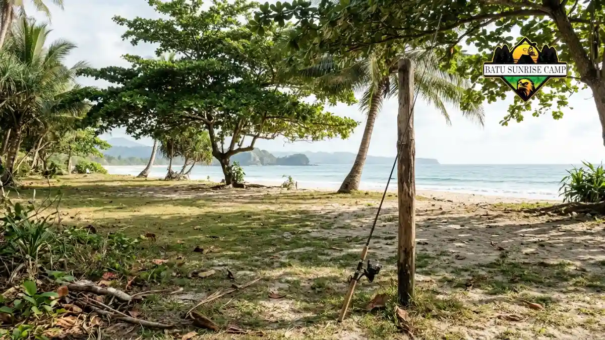

Pantai yang cocok untuk camping sekaligus untuk mancing adalah pantai dengan lahan tenda datar, akses air aman, ombak terkendali, dan aturan yang mengizinkan memancing.
- Pantai ideal untuk dua kegiatan ini punya lahan tenda datar dan teduh, akses aman ke perairan, serta izin jelas dari pengelola.
- BMKG menggolongkan gelombang 2,5 sampai 4 meter sebagai kategori tinggi, sehingga prakiraan resmi wajib dicek sebelum berangkat.
- Kunjungan wisatawan pantai selatan Tulungagung dilaporkan naik 16 persen pada libur Lebaran 2026, jadi pantai populer cepat ramai saat libur.
- Pantai Sine, Dlodo, Semilir, Buyutan, dan Srau terdokumentasi punya area atau tren camping, tetapi titik mancing tetap perlu dikonfirmasi.
- Pilihan terbaik ditentukan oleh pengalaman, jumlah rombongan, dan musim, bukan hanya popularitas.
Apa Itu Pantai yang Cocok untuk Camping Sekaligus Mancing?
Pantai yang cocok untuk camping sekaligus mancing adalah pesisir yang mengizinkan bermalam dengan tenda dan menyediakan akses aman ke perairan untuk memancing dari daratan.
Konsep ini menggabungkan dua kegiatan yang saling melengkapi. Camping memberi waktu panjang di lokasi, sedangkan memancing memberi alasan untuk berada di tepi air pada saat paling tenang, yaitu senja dan menjelang subuh.
Karena itu, pantai yang dipilih tidak cukup indah, tetapi juga harus memenuhi syarat teknis untuk dua kegiatan sekaligus.
Pembaca yang paling terbantu adalah pemula, keluarga, dan komunitas hobi yang ingin satu perjalanan terasa penuh.
Batasannya jelas: tidak semua pantai wisata mengizinkan memancing, dan tidak semua pantai tempat memancing menyediakan area tenda yang layak. Pantai yang memenuhi keduanya biasanya perlu dicari dengan membandingkan fasilitas, aturan, dan kondisi laut.
Apa Saja Kriteria Pantai yang Cocok untuk Camping dan Mancing?
Kriteria utamanya adalah lahan tenda datar di atas garis pasang, naungan alami, air bersih, izin pengelola, serta titik memancing yang terjangkau tanpa risiko ombak besar.
Berikut kriteria yang bisa dipakai sebagai daftar periksa saat membandingkan pantai:
- Lahan tenda: datar, tidak tergenang saat pasang, dan cukup jauh dari bibir air.
- Naungan: pohon cemara laut atau vegetasi pantai membantu mengurangi panas dan angin.
- Fasilitas dasar: toilet, air bersih, dan tempat sampah memudahkan bermalam lebih dari satu hari.
- Akses memancing: ada titik di pasir, karang rendah, atau teluk yang bisa dijangkau dengan aman.
- Aturan: pengelola mengizinkan memancing dan menentukan zona yang boleh dipakai.
- Akses darurat: jalan masuk dapat dilalui kendaraan dan ada sinyal atau warga di sekitar lokasi.

Kriteria pantai yang cocok untuk camping dan mancing mencakup lahan tenda datar, naungan alami, fasilitas dasar, serta titik pancing yang terjangkau dengan aman.
Satu kriteria tidak bisa menutup kekurangan kriteria lain. Pantai dengan ombak tenang tetapi tanpa izin memancing tetap tidak cocok, dan pantai dengan titik pancing bagus tetapi tanpa lahan tenda aman akan memaksa pengunjung mengambil risiko.
Pantai Mana di Jawa Timur yang Bisa Dipertimbangkan?
Pantai di Jawa Timur yang terdokumentasi memiliki aktivitas camping antara lain Sine dan Dlodo di Tulungagung, Semilir di Tuban, serta Buyutan dan Srau di Pacitan.
Tabel berikut merangkum informasi dari pemberitaan media, dan setiap pantai tetap perlu dicek ulang karena tarif serta aturan dapat berubah.
| Pantai | Kabupaten | Catatan camping | Catatan memancing |
|---|---|---|---|
| Sine | Tulungagung | Buka 24 jam, ada area camping dan warung seafood (Januari 2026) | Kawasan teluk dengan kampung nelayan, tanyakan titik aman ke warga |
| Dlodo | Tulungagung | Area luas, datar, dan cukup rindang | Konfirmasi izin dan titik ke pengelola |
| Semilir | Tuban | Ada toilet dan tempat mandi, tiket masuk gratis dengan biaya parkir (Juni 2026) | Pantai utara, tanyakan zona memancing |
| Buyutan dan Srau | Pacitan | Aktivitas camping dilaporkan meningkat (Desember 2025) | Konfirmasi ke pengelola setempat |
Sumber yang tersedia membahas fasilitas camping, bukan titik pancing. Karena itu, kecocokan untuk memancing perlu dipastikan langsung kepada pengelola atau warga sekitar. Untuk perbandingan karakter pantai berdasarkan arah pesisir, baca perbandingan pantai utara dan selatan Jawa Timur untuk camping dan mancing.
Pembaca yang berada di Malang Raya juga bisa melihat daftar lokasi pantai Malang Selatan untuk camping sebagai pembanding.
Bagaimana Cara Kerja Camping dan Mancing dalam Satu Perjalanan?
Camping dan mancing dalam satu perjalanan dijalankan dengan tiba lebih awal, mendirikan tenda sebelum sore, lalu menjadwalkan sesi memancing pada senja dan pagi hari.
Urutan kerja yang umum dipakai terdiri dari empat tahap.
- Pertama, cek prakiraan gelombang dan lapor ke pengelola.
- Kedua, dirikan tenda di lahan aman sebelum mulai memancing.
- Ketiga, pilih titik pancing yang bisa dijangkau dengan aman, lalu mulai pada waktu cahaya rendah.
- Keempat, bersihkan seluruh sampah, termasuk senar dan kail bekas, sebelum pulang.
Pembagian waktu yang rapi mencegah kelelahan. Peralatan pancing yang ringkas membuat kegiatan ini lebih mudah, dan panduan alat pancing untuk camping di pantai bisa dipakai sebagai rujukan. Jadwal terperinci per jam tersedia di itinerary 2 hari 1 malam camping dan mancing di pantai.
Kapan Waktu Terbaik Camping dan Mancing di Pantai?
Waktu terbaik umumnya adalah saat prakiraan BMKG menunjukkan gelombang kategori sedang atau lebih rendah, dan sebaiknya dipastikan satu hari sebelum berangkat.
Data BMKG menunjukkan kondisi laut selatan Jawa Timur bisa berubah cepat. Pada periode 4 sampai 7 Maret 2026, BMKG memperingatkan gelombang sangat tinggi 4 sampai 6 meter berpeluang terjadi di Samudra Hindia selatan Jawa Tengah, Jawa Timur, dan Nusa Tenggara Barat.
Sebaliknya, dalam satu periode peringatan akhir Juli 2026, BMKG mencatat 36 perairan berkategori tinggi dan 215 perairan berkategori sedang di seluruh Indonesia.
Angka tersebut menunjukkan bahwa kondisi laut tidak bisa ditebak dari musim saja. Jadwalkan perjalanan di hari kerja bila memungkinkan, karena pantai lebih lengang. Pantau halaman resmi peringatan gelombang tinggi BMKG sebelum memutuskan berangkat atau menunda.
Faktor Apa yang Menentukan Keamanan Camping dan Mancing di Pantai?
Keamanan ditentukan oleh tinggi gelombang, posisi tenda terhadap garis pasang, kondisi titik memancing, kesiapan peralatan darurat, dan keberadaan pengelola atau warga yang bisa dihubungi.
BMKG membagi tinggi gelombang menjadi beberapa kategori, yaitu sedang pada 1,25 sampai 2,5 meter, tinggi pada 2,5 sampai 4 meter, sangat tinggi pada 4 sampai 6 meter, dan ekstrem di atas 6 meter.
Kategori tinggi ke atas sebaiknya dianggap sebagai sinyal untuk tidak memancing di karang atau bibir air.
Faktor lain yang sering terlewat adalah arah pulang di malam hari. Titik pancing yang aman pada siang hari bisa licin dan gelap setelah matahari terbenam.
Siapkan lampu kepala, alas kaki antiselip, dan kotak P3K. Rincian lebih lengkap tersedia pada artikel keselamatan memancing di pantai saat camping.
Apa Manfaat dan Batasan Memilih Pantai untuk Camping Sekaligus Mancing?
Manfaat utamanya adalah efisiensi waktu dan pengalaman utuh dalam satu lokasi, sedangkan batasannya adalah hasil tangkapan tidak pasti dan kondisi laut dapat berubah mendadak.
Manfaat yang umum dirasakan meliputi suasana tenang di waktu pagi dan senja, kebersamaan rombongan, serta biaya transportasi yang hanya sekali untuk dua kegiatan. Selain itu, bermalam di lokasi membuat pemancing tidak perlu berangkat dini hari dari jauh.
Batasannya juga perlu dipahami. Hasil memancing tidak bisa dijamin, sehingga bekal makanan tetap harus dibawa.
Fasilitas pantai berbeda-beda, dan sebagian lokasi hanya menyediakan toilet sederhana. Risiko terbesar tetap ombak besar, terutama di pantai selatan yang berhadapan dengan Samudra Hindia.
Apa Kesalahan Umum Saat Memilih Pantai untuk Camping dan Mancing?
Kesalahan umum meliputi memilih pantai hanya karena viral, tidak menanyakan aturan memancing, mendirikan tenda terlalu dekat air, dan berangkat tanpa mengecek prakiraan gelombang.
Beberapa kesalahan yang paling sering terjadi:
- Memilih berdasarkan foto. Pantai yang indah di media sosial belum tentu punya lahan tenda aman.
- Tidak bertanya soal izin. Sebagian pantai membatasi memancing di zona tertentu.
- Tenda terlalu dekat air. Pasang dapat naik saat malam dan merendam perlengkapan.
- Membawa terlalu banyak alat. Peralatan berlebih menyulitkan perpindahan dan memperlambat evakuasi.
- Meninggalkan senar bekas. Senar yang tercecer membahayakan satwa dan pengunjung lain.
Semua kesalahan ini bisa dicegah dengan persiapan sederhana. Daftar barang bawaan yang umum dipakai ada pada panduan perlengkapan camping pantai.
Pantai Ramai atau Pantai Sepi, Mana yang Lebih Cocok untuk Camping dan Mancing?
Pantai ramai lebih cocok untuk pemula karena fasilitas lengkap dan ada bantuan, sedangkan pantai sepi lebih cocok untuk pengunjung berpengalaman yang siap mandiri.
Kepadatan pantai dapat berubah tajam saat libur. Menurut pemberitaan Antara Jatim, wisatawan pantai selatan Tulungagung pada libur Lebaran 2026 dilaporkan naik 16 persen. Kenaikan seperti ini membuat area populer padat dan titik memancing sulit didapat.
| Pembanding | Pantai ramai | Pantai sepi |
|---|---|---|
| Fasilitas | Umumnya lebih lengkap | Umumnya minim |
| Bantuan darurat | Lebih mudah | Lebih sulit |
| Ruang memancing | Terbatas saat libur | Lebih leluasa |
| Cocok untuk | Pemula dan keluarga | Pengunjung berpengalaman |
Pilih sesuai kemampuan rombongan. Untuk lokasi terpencil, ikuti tips aman camping di pantai terpencil dan pahami aturan memancing di pantai wisata sebelum menentukan titik.
Kesimpulan
Pilih pantai dengan lahan tenda aman, izin memancing yang jelas, dan prakiraan gelombang bersahabat, lalu cek ulang informasi langsung ke pengelola sebelum berangkat.
- Bandingkan minimal dua pantai sebelum menentukan tujuan.
- Cek BMKG sehari sebelumnya untuk memastikan kondisi gelombang.
- Konfirmasi zona memancing kepada pengelola pantai.
- Siapkan rencana cadangan bila laut tidak bersahabat.
Informasi dalam artikel ini bersifat umum dan dapat berubah, sehingga selalu verifikasi tarif, jam, dan aturan terbaru.

Pertanyaan yang sering diajukan (FAQ)